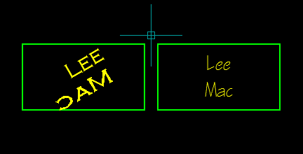

Match Attributes
This page is delivered for consistency purposes only, as part of the LeeMac sample module of DynALisp, which shows how DynALisp turns existing AutoLISP programs into a module. The program and its description are the work of Lee Mac, who keeps all the credit for them. The original page, with the latest version, is on Lee Mac's website: https://lee-mac.com/matchattribs.html
| Function Syntax | LM-MatchAttributes – original syntax: MatchAttribs (see aliases) |
| Current Version | 1.0 |
| Compatible with AutoCAD for Mac? | No |
| Compatible with AutoCAD LT? | Yes |
| Original Page | lee-mac.com/matchattribs.html |
Program Description
This program allows a user to quickly match attribute properties for a selected source attribute and multiple destination attributes.
Upon calling the program with MatchAttribs at the command line, the user is prompted to select a 'source' attribute to be used as a template for other selected attributes. The user is subsequently prompted to select multiple 'destination' attributes - these attributes will consequently inherit the same properties as the selected 'source' attribute.
The properties to be matched are listed at the top of the source code, and may be edited to suit. These properties correspond to the ActiveX properties of the Attribute VLA-Object.
Example of Usage

Bundled program notes
;;-------------------=={ Match Attribs }==--------------------;;
;; ;;
;; Prompts for selection of source attribute, then proceeds ;;
;; to match the listed properties for subsequently picked ;;
;; attributes. ;;
;;------------------------------------------------------------;;
;; Author: Lee Mac, Copyright © 2010 - www.lee-mac.com ;;
;;------------------------------------------------------------;;
Command Names And Aliases
As in every DynALisp module, each program of this sample module has one main command, named LM-*, and the original command names of Lee Mac's page are kept as its aliases: they run the same command, and can be added, renamed or removed in Dyl-Suite (saved in Resources\Aliases.csv).
| Command | Aliases | Name |
|---|---|---|
| LM-MatchAttributes | MATCHATTRIBS | Match Attributes |